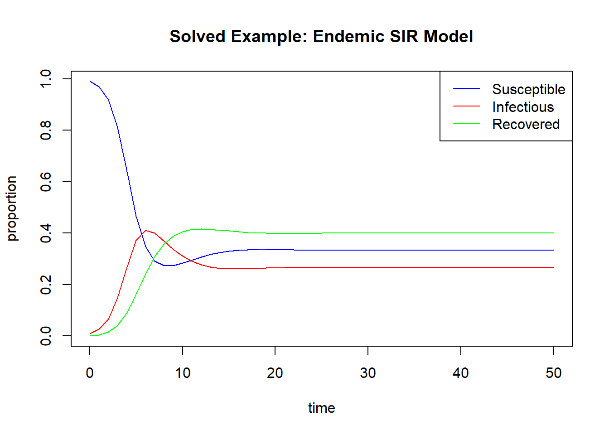

ModelFunc <- function(time,state,parameters){
# Extracting the state variables
# Since we are doing this in the context of SIR models, we have the state variables S, I, and R
S <- state["S"]
I <- state["I"]
R <- state["R"]
# Extracting the model parameters
# We are doing this for an SIR model, so we have two parameters - the transmission and recovery rate
beta <- parameters["beta"]
gamma <- parameters["gamma"]
# Now we are going to use those previously extracted state variables and parameters to construct our model equations (differential equations)
dS <- -(beta*I*S)
dI <- (beta*I*S) - (gamma*I)
dR <- (gamma*I)
# Now we will return those model equations as a list
return(list(c(dS,dI,dR)))
}SIR Module Rough Draft
Introduction and Course Learning Objectives
Epidemiology Terms
Learning Objectives
By the end of this section, you should be able to:
- Define basic terms in epidemiology.
For the purposes of mathematical models in epidemiology, such as the SIR model, individuals are classified based solely on their ability to transmit a pathogen, not their diseased status (whether or not they exhibit symptoms). For the purposes of epidemiological models, individuals are generally classified into four primary categories:
Susceptible: No pathogen is present in the individual. The individual only has a low level of non-specific immunity to incoming infection.
Exposed: The individual has encountered an infected individual and is infected with the pathogen. The levels of pathogen in this individual are too low to allow them to transmit the disease to another person. This individual is hence considered “exposed” to the pathogen but not yet able to infect others with it.
Infectious: The individual has surpassed the exposed stage and the pathogen levels within them are high enough to allow for transmission. This individual is no longer just exposed to the pathogen, but can actively spread it now.
Recovered: The individual has surpassed the infectious stage, their immune system has cleared enough of the pathogen that they can no longer transmit it. This individual has some amount of immunity to the pathogen now, but for how long this immunity lasts depends on the specific pathogen.
Note
The individual can still exhibit symptoms of the disease while in the recovered compartment, so it is best to think of this compartment as individuals who have “recovered” from their ability to spread the infection but not necessarily all symptomatic implications of that infection.
These categories are not exhaustive, and individuals can be classified into further categories based on their stage of infection or immunity status, just to name a few. These four categories are highlighted since they come up most often while discussing SIR-type models and epidemiological models in general. It is important to note that, at the same time individuals fall into these categories, they can also be classified based on whether or not they exhibit symptoms of infection:
Incubation Period: The individual has been infected with the pathogen but does not show disease symptoms. This is also commonly refferred to as the asymptomatic period.
Diseased period: The individual has surpassed the incubation period and begins to show symptoms of the disease.
Although these classifications are more commonly used in a medical, rather than an epidemiological, contexts, we still provide them here to clarify the fact that an individual can still be infectious while in the incubation period and showing no symptoms of the disease. Similarly, an individual can still be in the diseased period and show lingering symptoms of infection while being recovered since their immune system has cleared enough of the pathogen that they are not longer infectious.
(PLACE GRAPH HERE OF ALL THESE PERIODS)
CITATION FOR ENTIRE SECTION: Keeling and Rohani
References
Introducing Compartmental Models
Learning Objectives
By the end of this section, you should be able to:
- Define what a compartmental model is.
- Identify which differential equation models can be called compartmental models.
Generally speaking, compartmental models are a way to represent the flow of populations between different states, known as compartments, using differential equations. Compartmental models show up in a wide variety of fields, not just epidemiology. Any field that can benefit from knowing how information flows between states can benefit from compartmental models.
In the epidemiological context, compartmental models are analyzing how people flow through the four categories, which will be referred to simply as “compartments” from now on, introduced in the previous section: susceptible, exposed, infectious, and recovered. The relationships between these compartments are often represented using flowcharts like the one seen below.
(INSERT IMAGE OF SEIR FLOWCHART THAT SPECIFICALLY SHOWS LAMBDA INSTEAD OF BETA AS THE FLOW RATE BETWEEN S AND E)
The arrows between these compartments represent the direction of flow (susceptible individuals becoming exposed, exposed individuals becoming infectious, etc.) and the symbols above each arrow represent the flow rate between these compartments with respect to time.
It’s easiest to understand this conceptually through an example. Say in a very large population with the established presence of a pathogen, on average, 300 new people become exposed to a pathogen every day. Of those that are exposed to the pathogen, on average, 50 of them reach pathogen levels high enough to become infectious per day. Then, of those that are infectious and able to transmit the pathogen, on average, 40 of them recover from the pathogen (in the sense that they can no longer transmit it). We can model this specific example with the modified flowchart below:
Which compartments we choose to include depends on the specific pathogen and disease we are modeling. Models where the exposed period is so small it can be considered negligible, or is ommited for the sake of simplicity, are specifically known as SIR models (standing for the three different compartments included in the model: susceptible, infectious, and recovered).
Note
Some sources will refer generally to any compartmental epidemiological model as an “SIR model,” but in our context we will make the distinction between SIR models and models that include different compartments than just susceptible, infectious, and recovered.
We will, however, refer to the general idea of compartmental epidemiological models as “SIR-type models.”
The next section covers the specific formulation and assumptions of this model.
Learning Assessment:
Make assessment that’s like given what compartments these letters represent draw a flowchart for the following models like SEIR SMEIR SIS SIRS etc
CITATION FOR ENTIRE SECTION: Keeling and Rohani
The Classic SIR Epidemic Model
Learning Objectives
By the end of this section, you should be able to:
Recall the classic epidemic model’s equations.
Construct equations for novel compartmental models given the flow rates between each of the compartments.
Identify the assumptions (and their justifications) made in the formulation of the classic epidemic model, including the assumptions made in relation to how its parameters were obtained / formulated.
Recall what parameters go into the construction of the classic epidemic model, including the typical symbols for each.
Explain how the classic epidemic model deviates from reality in relation to the assumptions it makes.
Differentiate situations where an empirically deduced transmission rate is more accurate and beneficial to one calculated based on first principles.
Discern what situations are best modeled by frequency or density dependent transmission rates, or a combination of both.
The classic SIR epidemic model is a type of compartmental model that makes the following key assumptions:
The epidemic invades the population and concludes itself quickly enough that demographic processes, namely births and deaths, are not very influential to the overall process and can be omitted from the model. This is also known as the closed population assumption.
Individuals move between the compartments of susceptible, infectious, and recovered only. Other compartments, namely the exposed compartment, are omitted for simplicity.
Note
Since this module covers only the epidemic and endemic SIR models, neither of which include the exposed compartment, the terms “infected” and “infectious” will be used interchangeably moving forward. This is because with only the susceptible, infectious, and recovered compartments, once an individual gets infected with the pathogen we assume they are infectious as well.
It is important to note that although “infected” and “infectious” are used interchangeably within the context of this learning module, they are not synonymous all the time. As model complexity increases and the exposed compartment is included, a distinction must be made between the two, as an individual can be considered “infected” but not “infectious” (i.e. they belong to the exposed compartment).
These are not the only assumptions made by the epidemic SIR model, but they do clearly distinguish it from other compartmental models such as the SEIR model, which includes exposed compartment, and the endemic SIR model, which includes the flow in and out of each compartment due to demographics (births and death).
Moving forward, \(S\). \(I\), and \(R\) will refer to the number of individuals in the susceptible, infectious, and recovered compartments, respectively. The variables \(\tilde{S}=\frac{S}{N}\), \(\tilde{I}=\frac{I}{N}\), and \(\tilde{R}=\frac{R}{N}\), will be used to refer to the proportion of individuals in the susceptible, infectious, and recovered compartments, respectively, where \(N\) is the total number of individuals in the population defined as \(N=S+I+R\).
Note
Since the epidemic model assumes a closed population with no births or deaths, \(N\) is not a variable that can change but a constant.
Notice that \(\tilde{S}+\tilde{I}+\tilde{R}=1\)
The following equations provide the rates of change, with respect to time, for the number of individuals in each of the three compartments of the epidemic SIR model:
\[ \begin{aligned} \frac{dS}{dt} &= -\lambda S \\[10pt] \frac{dI}{dt} &= \lambda S - \gamma I \\[10pt] \frac{dR}{dt} &= \gamma I \end{aligned} \]
Dividing each equation by the population size \(N\), we can rewrite the SIR equations above to provide the rates of change, with respect to time, for the proportion of individuals in each compartment:
\[ \begin{aligned} \frac{d\tilde{S}}{dt} &= -\lambda \tilde{S} \\[10pt] \frac{d\tilde{I}}{dt} &= \lambda \tilde{S} - \gamma \tilde{I} \\[10pt] \frac{d\tilde{R}}{dt} &= \gamma \tilde{I} \end{aligned} \]
Note
The rate of change of the number of people in each compartment can be understood as following the basic pattern of \(R_i-R_o\) where \(R_i\) is the rate that people are flowing into the compartment per unit time and \(R_o\) is the rate that people are flowing out of the compartment per unit time. This pattern can be used to construct any number of novel compartmental models.
Notice that these equations mirror exactly the compartmental flowcharts introduced in the previous section. The epidemic SIR model can be representing using the following flowchart:
The flow rates between each compartment have specific names and symbology, summarized in the table below:
| Terminology / Name | Common Symbol | Interpretation |
|---|---|---|
| Force of Infection | \(\lambda\) | The per capita rate at which susceptible individuals are becoming infectious per unit time. |
| Recovery Rate | \(\gamma\) | The per capita rate at which infectious individuals are recovering from infection per unit time. |
Note
The phrase “per capita” here refers to a rate that is divided among each person in the given compartment. Take the following example: if 3 people are pouring water into a large bucket and each are adding 5 cups per minute, then the per capita rate at which water is being added is 5 cups per minute. To obtain the total rate at which water is being poured into the bucket, we would multiply the number of people pouring, 3, by their per capita rate, 5, to get a total inflow of 15 cups per minute.
A similar logic is being utilized in the SIR equations: the number of susceptible people at a given time, \(S\), is multiplied by the per capita rate they are becoming infectious to get the total rate at which people are entering the infectious compartment Similarly, the number of infectious people at a given time, \(I\), is multiplied by the per capita rate they are recovering to get the total rate at which people are entering the recovered compartment
CITATION FOR ENTIRE SECTION: Keeling and Rohani
Formulating the Force of Infection
The force of infection, or the rate at which susceptible individuals are becoming infected per unit time, can be understood and formulated based on first principles in epidemiology as follows:
Consider the perspective of a susceptible individual in the population at any given time. Let’s say this individual makes, on average, \(c\) contacts with other people per unit time. Then, suppose that of those \(c\) people this individual makes contact with per unit time, the proportion of them that will be infectious is \(\tilde{I}\). Then, of those \(c\tilde{I}\) contacts this individual makes with infectious people, the proportion of them that will actually succeed at spreading the infection to them is \(p\). Multiplying these together, we can obtain the per capita (per person) rate which susceptible people are becoming infectious, or the force of infection as follows: \[ \lambda=cp\tilde{I} \]
Note
Although this formulation for \(\lambda\) is based on first principles, there are still a number of assumptions being made. Namely:
We assume every individual in the population comes into contact with other individuals at a constant rate \(c\). This means we assume everyone in the population is equally sociable and, on average, comes into contact with the same number of people per unit time.
We assume homogeneous mixing of the population. That is, we assume everyone has an equal probability of contacting any other individual in the population. In real life, this is of course not true: infectious individuals are more likely to come into contact with other infectious individuals if they go to the hospital and are less likely to come into contact with susceptible individuals if they quarantine, just to name a few examples.
The force of infection is calculated in many ways; we just provide one of many possible formulations and rationales here. Notice there are two constant terms in the formulation for \(\lambda\) given above: \(c\) and \(p\). Since these terms are constant throughout time in the model, they are grouped together into a singular term, known as the transmission rate. As it is a constant unaffected by the dynamics of the model itself, the transmission rate—often denoted as \(\beta\)—is considered a property of the specific disease or pathogen being analyzed and is calculated prior to the construction of the model. We present common methods of calculating \(\beta\), summarized in the table below:
| Method | What is it? | Best Used When . . . |
|---|---|---|
| Blackbox method | This is a data-driven method wherein \(\beta\) is calculated empirically using epidemiological data. We can think of this as “fitting” a value of \(\beta\) in our model to most accurately reflect the dynamics we observe in the real world. | There is an abundance of accurate real-world data available on the number of susceptible and infectious people over time. |
| First-Principles method | This method utilizes the formulation \(\beta=cp\), which was obtained using first-principles, and separately calculates appropriate values for \(c\) and \(p\). The specifics of how \(c\) and \(p\) are calculated vary widely depending on context and model complexity, but can be found using a combination of logic and predictions for how people will interact as well as real-world data on the transmissibility of a pathogen. | Real-world data is scarcer or there the data available lends itself better to calculating \(c\) and \(p\) separately rather than fitting an overall \(\beta\). |
Putting this all together, we can rewrite the SIR model equations from the previous section as follows:
\[ \begin{aligned} \frac{dS}{dt} &= -\beta \tilde{I} S \\[10pt] \frac{dI}{dt} &= \beta \tilde{I} S - \gamma I \\[10pt] \frac{dR}{dt} &= \gamma I \end{aligned} \]
And for proportions:
\[ \begin{aligned} \frac{d\tilde{S}}{dt} &= -\beta \tilde{I} \tilde{S} \\[10pt] \frac{d\tilde{I}}{dt} &= \beta \tilde{I} \tilde{S} - \gamma \tilde{I} \\[10pt] \frac{d\tilde{R}}{dt} &= \gamma \tilde{I} \end{aligned} \]
CITATION: difficult to say, mixture of book and own intuition of these concepts
Formulating the Recovery Rate and Other Parameters
MLE?
Solving SIR Equations
Learning Objectives
By the end of this section, you should be able to:
Solve basic SIR model equations using a combination of mathematical and computational techniques.
Identify the difference between common methods of solving SIR-type models, including Euler’s method and the deSolve package in R.
Two common methods of solving differential equations that are difficult to solve by hand (in an exact method, that is) is:
- Euler’s method
- The deSolve package in R
We will go over each method in this section and the differences between the two.
Euler’s method
Euler’s method estimates the solution to a differential equation using a series of short, connected linear approximations at a discrete set of times. Although Euler’s method is widely regarded to be a relatively inefficient method for solving otherwise “unsolvable” (at least in the elementary sense) ordinary differential equations, it is still valued for its simplicity and accessibility.
Suppose we have approximate initial values for the variables of interest (which, in the case of the SIR model, is the number or proportion of susceptible, infectious, and recovered individuals at the beginning of our study period). We will denote the number of susceptible, infectious, and recovered individuals at starting time \(t\) as \(S(0)\), \(I(0)\), and \(R(0)\), respectively.
Note
To keep it simple, we will only discuss the process of Euler’s method as it is applied to the number of individuals in each compartment, but keep in mind this process can be applied in exactly the same way to proportions as well.
Our goal is to find an approximate solutions to \(S(t)\), \(I(t)\), and \(R(t)\)—the number of individuals in each compartment at time \(t\)—using \(s(0)\), \(i(0)\), and \(r(0)\) and the rates of change given by the system of SIR equations formulated in this section. For clarity, \(S(t)\), \(I(t)\), and \(R(t)\) represent the exact solutions to the SIR equations, and the approximation solutions given by Euler’s method are represent as \(s(t)\), \(i(t)\), and \(r(t)\).
Note
These types of problems, one where we are given a set of intial values and corresponding differential equations, are known as initial-value problems (or IVPs).
Euler’s method involves repeatedly finding tangent line approximations to \(S(t)\), \(I(t)\), and \(R(t)\) at a discrete set of times (often called nodes):
- \(s_0,\dots,s_t,\dots,s_b\)
- \(i_0,\dots,i_t,\dots,i_b\)
- \(r_0,\dots,r_t,\dots,r_b\)
Note
\(s_t\), \(i_t\), and \(r_t\) represent approximations to \(S(t)\), \(I(t)\), and \(R(t)\) at a time \(t\). Additionally, \(s_b\), \(i_b\), and \(r_b\) just represent the approximation at the final time \(b\) of the interval we wish to find an approximate solution to, or \([0,b]\) .
These approximations are found using the following recursive formulas:
\[ \begin{aligned} s_{t+1} &= s_t - \Delta t \, \beta i_t s_t \\[10pt] i_{t+1} &= i_t + \Delta t \, (\beta i_t s_t - \gamma i_t) \\[10pt] r_{t+1} &= r_t + \Delta t \, \gamma i_t \end{aligned} \]
Where:
- \(s_{t+1}\), \(i_{t+1}\), and \(r_{t+1}\) are the approximations for \(S(t)\), \(I(t)\), and \(R(t)\) at the next node
- \(s_{t}\), \(i_{t}\), and \(r_{t}\) are the approximations for \(S(t)\), \(I(t)\), and \(R(t)\) at the previous node
- \(\Delta t\) is the step size (how far each node is spaced apart on the \(t\)-axis)
- \(\beta\) and \(\gamma\) are the transmission and recovery rate, respectively
Note
This formula is just an application of the generalized Euler’s method for first-order differential equation \(Y'(t)=f(t,Y(t))\), true solution \(Y(t)\), and approximate solutions \(y_0,\dots,y_t,\dots,y_b\), which are calculated at evenly spaced \(t_n\) as:
\(y_{t+1}=y_t+ \Delta t f(t_n,Y(t_n)\)
Where again \(\Delta t\) is how far each \(t_n\) are apart.
Specifically, the formulas provided above substitute the rate of change functions \(\frac{dS}{dt}\), \(\frac{dI}{dt}\), and \(\frac{dR}{dt}\) in directly.
This process can be a little confusing to grasp at first, so let’s do an example.
Suppose the following SIR model equations with initial values \(s(0)=99\), \(i(0)=1\), \(r(0)=0\), transmission rate \(\beta=1.5\), and recovery rate \(\gamma=0.5\):
\[ \begin{aligned} \frac{dS}{dt} &= -1.5 \tilde{I} S \\[10pt] \frac{dI}{dt} &= 1.5 \tilde{I} S - 0.5 I \\[10pt] \frac{dR}{dt} &= 0.5 I \end{aligned} \]
The following table illustrates the calculation process until \(t=5\) with a step size of \(\Delta t=1\):
| Time | Approximations | Calculation Process |
|---|---|---|
| \(t=0\) | \(s\left(0\right)=99.0\) \(i\left(0\right)=1.0\) \(r\left(0\right)=0.0\) |
— |
| \(t=1\) | \(s\left(1\right)\approx 97.5\) \(i\left(1\right)\approx 2.0\) \(r\left(1\right)=0.5\) |
\(s\left(1\right)=99-\left(1\right)\left(1.5\right)\left(\frac{1}{100}\right)\left(99\right)\) \(i\left(1\right)=1+\left(1\right)\left[\left(1.5\right)\left(\frac{1}{100}\right)\left(99\right)-0.5\left(1\right)\right]\) \(r\left(1\right)=0+\left(1\right)\left(0.5\right)\left(1\right)\) |
| \(t=2\) | \(s\left(2\right)\approx 94.6\) \(i\left(2\right)\approx 3.9\) \(r\left(2\right)\approx 2.0\) |
\(s\left(2\right)=97.5-\left(1\right)\left(1.5\right)\left(\frac{2.0}{100}\right)\left(97.5\right)\) \(i\left(2\right)=2.0+\left(1\right)\left[\left(1.5\right)\left(\frac{2.0}{100}\right)\left(97.5\right)-0.5\left(2.0\right)\right]\) \(r\left(2\right)=0.5+\left(1\right)\left(0.5\right)\left(2.0\right)\) |
| \(t=3\) | \(s\left(3\right)\approx 89.1\) \(i\left(3\right)\approx 7.5\) \(r\left(3\right)\approx 3.4\) |
\(s\left(3\right)=94.6-\left(1\right)\left(1.5\right)\left(\frac{3.9}{100}\right)\left(94.6\right)\) \(i\left(3\right)=3.9+\left(1\right)\left[\left(1.5\right)\left(\frac{3.9}{100}\right)\left(94.6\right)-0.5\left(3.9\right)\right]\) \(r\left(3\right)=2.0+\left(1\right)\left(0.5\right)\left(3.9\right)\) |
| \(t=4\) | \(s\left(4\right)\approx 79.1\) \(i\left(4\right)\approx 13.7\) \(r\left(4\right)\approx 7.2\) |
\(s\left(4\right)=89.1-\left(1\right)\left(1.5\right)\left(\frac{7.5}{100}\right)\left(89.1\right)\) \(i\left(4\right)=7.5+\left(1\right)\left[\left(1.5\right)\left(\frac{7.5}{100}\right)\left(89.1\right)-0.5\left(7.5\right)\right]\) \(r\left(4\right)=3.4+\left(1\right)\left(0.5\right)\left(7.5\right)\) |
| \(t=5\) | \(s\left(5\right)\approx 62.8\) \(i\left(5\right)\approx 23.1\) \(r\left(5\right)\approx 14.0\) |
\(s\left(5\right)=79.1-\left(1\right)\left(1.5\right)\left(\frac{13.7}{100}\right)\left(79.1\right)\) \(i\left(5\right)=13.7+\left(1\right)\left[\left(1.5\right)\left(\frac{13.7}{100}\right)\left(79.1\right)-0.5\left(13.7\right)\right]\) \(r\left(5\right)=7.2+\left(1\right)\left(0.5\right)\left(13.7\right)\) |
As you might notice, the calculations above are very tedious, which is why Euler’s method is most often calculated using code rather than by hand.
Note
The accuracy of the solution produced by Euler’s method is a direct result of what we choose the step size to be. If the step size is larger, then the curvature of the true solution will be lost since we are repeatedly taking linear approximations, resulting in an approximate solution that deviates a lot from the true solution curve. On the other hand, as the step size gets smaller, the approximate solution provided by Euler’s method converges to the true solution curve.
See the section Evaluating and Comparing Both Methods for a simulation demonstrating what happens when you change the step size.
CITATION: https://homepage.math.uiowa.edu/~atkinson/papers/NAODE_Book.pdf
deSolve Package in R
The deSolve Package in R contains a variety of functions that “solve initial value problems of a system of first-order ordinary differential equations (‘ODE’), of partial differential equations (‘PDE’), of differential algebraic equations (‘DAE’), and of delay differential equations.”
Note
The SIR-type models we are going to cover deal with systems of first-order ordinary differential equations.
Breaking up each word in this description, we have:
“First-order”: This just means we are only dealing with equations involving the first derivative and not subsequent derivatives (the second, third, fourth, etc. derivative)
“Ordinary”: The unknown function which we are trying to solve for depends only one independent variable.
Since our applications will only deal with first-order ODEs, we will only cover the deSolve function ode, which is used to solve (as you can probably guess) initial value problems (IVPs) for first-order ordinary differential equations.
The function ode takes in the following relevant parameters, summarized in the table below:
| Parameter Name | What Does It Take In? |
|---|---|
func |
A user-defined function that defines and returns a list of the model equations (the differential equations to be solved). |
y |
A vector specifying initial values. |
parms |
A vector specifying the model parameters. |
times |
A vector specifying the time points at which the solution of the model equations should be returned. This determines the resolution of the overall output but not the numerical accuracy of each output point. |
The function ode returns a matrix whose first column is the time points specified in the input times and subsequent columns are the solutions to the model’s state variables at those times. The state variables for an SIR model are the number or proportion of individuals susceptible, infectious, and recovered at a given time.
Before we can call ode, we must code the function to be passed into the parameter func. For a classic SIR model on the proportion of individuals in each compartment (see The Classic SIR Epidemic Model we do this using the following template function:
Now all we need to do is specify the other parameters y, parms, and times and call ode with them like so:
library(deSolve)
# Here we are specifying the initial values to be passed into the parameter y
# Make sure these initial values line up exactly with the state variables extracted in the model function from before
initial_vals <- c(S=0.99,I=0.01,R=0)
# Here we are specifying the parameters of the model and their values
# Make sure these parameters line up exactly with the parameters extracted in the model function from before
model_parameters <- c(beta=1.5,gamma=0.5)
# Here we are specifying the times for which outputs are calculated
# The closer together these times are, the higher the output resolution
output_times <- seq(0,50,by=1)
# Now we can call the function ode like so:
output <- ode(func=ModelFunc,y=initial_vals,parms=model_parameters,times=output_times)
# Printing the first 5 rows of the output matrix
print(head(output,5)) time S I R
[1,] 0 0.9900000 0.01000000 0.000000000
[2,] 1 0.9651705 0.02636257 0.008466945
[3,] 2 0.9044949 0.06539460 0.030110501
[4,] 3 0.7783227 0.14148790 0.080189448
[5,] 4 0.5844537 0.23987018 0.175676172Now that we have this matrix of the solved SIR model equations are at specified times, we can plot it like so:
matplot(x = output[,"time"], y = output[,2:4], type = "l", lty = 1, xlab = "time", ylab = "proportion", main = "Solved Example: Epidemic SIR Model", col = c("blue","red","green"))
# Adding a legend
legend("topright",legend = c("Susceptible", "Infectious", "Recovered"), col = c("blue","red","green"), lty = 1)
CITATION FOR QUOTE: https://cran.r-project.org/web/packages/deSolve/index.html
CITATION FOR CONTENT: file:///C:/Users/anjal/Downloads/v33i09.pdf
Evaluating and Comparing Both Methods
The following table summarizes some potential benefits and drawbacks to using Euler’s method or deSolve:
| Solving Method | Potential Benefits | Potential Drawbacks |
|---|---|---|
| Euler’s Method | - Can be done by hand or implemented in code - Simple to understand - Full control over accuracy of model - No external packages required |
- Low accuracy unless an extremely small step size is used - Computationally inefficient for small step sizes or complex models - Can be tedious to calculate by hand |
| deSolve Package | - Uses advanced solving methods with high accuracy - Handles large models with many system equations well - Efficient for complex models |
- Less transparent approach; not much understanding of what is going on “under the hood” - Requires learning new functions and syntax - Depends on external packages - Less control over solving method and accuracy |
The following simulation shows the difference between the solution curves produced by Euler’s method and the deSolve package for different values of the model parameters and step size:
Reproduction Numbers
Learning Objectives
By the end of this section, you should be able to:
Define what the basic and effective reproduction number is and recall primary differences between the two.
Interpret the basic and effective reproduction number in context.
Recall the formulas for the basic and effective reproduction numbers.
Explain what the “threshold phenomenon” is.
The reproductive number is defined as “the average number of secondary infectious cases caused by one infectious individual (before they recover or die or are otherwise not able to further transmit).” (CITATION: ANDREAS HANDEL BOOK)
The table below summarizes the two types of reproduction numbers we will focus on:
| Name | Symbol | Interpretation |
|---|---|---|
| Basic Reproduction Number | \(R_0\) | The average number of secondary infections produced by a single infectious individual in a completely susceptible population. This can also be thought of as the reproduction number calculated at the beginning of an outbreak (when basically everyone is suceptible). |
| Effective Reproduction Number | \(R_{e}\) | The average number of secondary infections produced by a single infectious individual in a population with a susceptible proportion equal to \(\frac{S}{N}\) |
Note
Some common misconceptions about \(R_0\) and \(R_e\) are:
“Must \(R_0\) and \(R_e\) be whole numbers because nobody can transmit the disease to, say, half a person?”
- No, \(R_0\) and \(R_e\) do not have to be whole numbers because they refer to averages, not the exact number of secondary infections produced by one person. An infectious person might infect nobody or tons of people but the reproduction numbers don’t capture every detail just the overall picture of how many secondary infectious are produced.
“Is the reproduction number a rate?”
- No, the reproduction number is not a rate. Take the example of HIV and SARS, which both have \(R_e\approx4\). However, SARS has an extremely rapid spread while HIV is much slower spreading. One individual infected with SARS might cause 4 secondary infections within the span of a week while an individual with HIV most likely infects 4 other people within the span of a few years. \(R_0\) and \(R_e\) don’t tell us anything about the timeframe of infections, so they are not rates.
The formula for the basic reproduction number is:
\[ R_0=\frac{\beta}{\gamma} \]
And similarly, the formula for the effective reproduction number is:
\[ R_e=\frac{\beta}{\gamma} \left( \frac{S}{N} \right) =R_0\tilde{S} \] These formulas should make sense, as they are multiplying the transmission rate \(\beta\) by the average duration of infection \(\frac{1}{\gamma}\) to obtain the average number of secondary infections by one infectious individual throughout their entire duration of infectivity.
The point where these two formulas differ is in their assumption about the proportion of susceptible individuals in the population. \(R_0\) assumes a completely susceptible population, so it is multiplying the expression \(\frac{\beta}{\gamma}\) by an invisible \(1\). Meanwhile, \(R_e\) assumes a susceptible proportion equal to \(\frac{S}{N}\) hence the final expression \(\frac{\beta}{\gamma}(\frac{S}{N})\).
Make sure you understand the definitions and intuition behind the formulas for \(R_0\) and \(R_e\). The next section on the threshold phenomenon applies the reproduction number in learning how to control the spread of infection.
CITATION FOR SECTION: ANDREAS HANDEL BOOK
The Threshold Phenomenon
First described by Kermack and McKendrick, the threshold phenomenon refers to the critical point whereby an infection will either invade the population or fail to. To find this critical point, observe the change in the proportion of infectious individuals given by:
\[ \frac{d\tilde{I}}{dt} = \beta \tilde{I} \tilde{S} - \gamma \tilde{I} \] Factoring out the \(\tilde{I}\), we have:
\[ \frac{d\tilde{I}}{dt} = \tilde{I}(\beta \tilde{S} - \gamma) \] If we wish to find the point at which the infection either invades or fails to, we can solve for when \(\frac{d\tilde{I}}{dt}<0\) (the proportion of infectious individuals is decreasing, or the disease is “dying off”) and \(\frac{d\tilde{I}}{dt}>0\) (the proportion of infectious individuals is increasing, or the disease is “growing”).
First, let’s analyze when \(\frac{d\tilde{I}}{dt}<0\):
$$ \[\begin{aligned} \frac{d\tilde{I}}{dt} &< 0 &\quad& \text{(Condition that the infected population is decreasing)} \\[10pt] \tilde{I}(\beta \tilde{S} - \gamma) &< 0 &\quad& \text{(Substitute } \frac{d\tilde{I}}{dt} = \tilde{I}(\beta \tilde{S} - \gamma)\text{)} \\[10pt] \beta \tilde{S} - \gamma &< 0 &\quad& \text{(Divide both sides by } \tilde{I} > 0\text{)} \\[10pt] \tilde{S} &< \frac{\gamma}{\beta} &\quad& \text{(Add } \gamma \text{ to both sides, then divide by } \beta > 0\text{)} \end{aligned}\]$$
Reproducing this procedure, we obtain the following similar result:
\[ \frac{d\tilde{I}}{dt} > 0 \;\Longleftrightarrow\; \tilde{S} > \frac{\gamma}{\beta} \]
From this, we can deduce that for an infection to even invade the population and start spreading, the initial proportion of susceptibles must be greater than \(\frac{\gamma}{\beta}\). This result is what is specifically known as the threshold phenomenon, with \(\frac{\gamma}{\beta}\) known as the threshold value. Notice that \(\frac{\gamma}{\beta}\) is exactly equal to the inverse of the basic reproduction number \(\frac{1}{R_0}\), which means we can also rewrite these conditions like so:
\[ \begin{aligned} \text{Disease will not invade the population and / or spread:} \qquad \tilde{S} &< \frac{1}{R_0} \\[10pt] \text{Disease will invade the population and / or spread:} \qquad \tilde{S} &> \frac{1}{R_0} \end{aligned} \]
The simulation below let’s you see the threshold phenomenon in action:
INSERT THRESHOLD SIM HERE
Note
Try changing the initial proportion of susceptible individuals \(S(0)\) to be above and below the rounded threshold value (\(\frac{\gamma}{\beta}\) ) shown. Notice that the proportion of infected individuals never increases if \(S(0)<\frac{\gamma}{\beta}\) but does increase if \(S(0)>\frac{\gamma}{\beta}\).
Connecting this even further to reproduction numbers, we can rewrite the inequalities found above in terms of \(R_e\) as follows:
\[ \begin{aligned} \qquad \tilde{S} &< \frac{\beta}{\gamma} \qquad \Longleftrightarrow \qquad R_e < 1 \\[10pt] \qquad \tilde{S} &> \frac{\beta}{\gamma} \qquad \Longleftrightarrow \qquad R_e > 1 \end{aligned} \]
The result above is a really important one: it tells us that \(R_e\) is another threshold for determining whether or not a disease will spread. Specifically, if \(R_e<1\), the disease is dying off but if \(R_e>1\) the disease is spreading.
This should come as no surprise though, as it can be inferred from the definition of \(R_e\) itself: if every single infectious person in the population (assuming the true value for the susceptible population, unlike \(R_0\) which assumes a completely naive population), on average “replaces” themselves with more than \(1\) infection, the disease will spread. Moreover, the point at which \(R_e\) reaches exactly \(1\) marks the maximum for the infected population since it is the point at which the disease goes from spreading (number of individuals infected rising) to dying off (number of individuals infected falling).
The simulation below demonstrates how the infected population increases, decreases, and reaches its maximum at different values of \(R_e\):
INSERT R EFFECTIVE SIM HERE
Note
Notice how \(R_e\) starts off at its highest (when the population is almost entirely susceptible and it is equal to \(R_0\)), then decreases over time to be equal to \(1\). At the point \(R_e=1\), the proportion of infected individuals reaches a maximum. Then, as \(R_e\) further decreases below \(1\) the proportion of infected individuals starts decreasing as the epidemic “dies off.”
Try expanding the window size in the simulation above and observe what happens to \(R_e\) as \(t \rightarrow \infty\). Notice that \(R_e\) never reaches \(0\)! This demonstrates another important result: for an epidemic to end, it is not necessary to completely exhaust the susceptible population and attain \(R_e=0\). The epidemic will start to end its course as soon as the proportion of susceptibles dips low enough to where \(R_e<1\). When this happens, the infectious individuals will, on average, no longer be “replacing” themselves with another infectious person despite there still being a non-zero population of susceptible people. If this goes on for a long enough time, the chain of transmission will break because there will be no more infectious people to spread the infection not because there were no more susceptible people to infect. This means that at the end of every epidemic, there will always be some people who were never infected and are still susceptible.
INSERT FLOW DIAGRAM THAT SHOWS EFF R AT VARIOUS FINITE STAGES AND ARROWS BETWEEN PEOPLE SPREADING THE INFECTION AND SAY THAT IF THERE IS LIKE 50 INFECTIOUS PEOPLE AND AN RE = 0.1 THEN 5 PEOPLE WILL GET INFECTED NEXT STAGE; ONCE THIS AVERAGE DIPS BELOW 1 PERSON FOR THE WHOLE INFECTIOUS POPULATION, DISEASE DIES OFF
Of course, one of our primary goals is to expedite the natural decrease of \(R_e\) to be below \(1\) as quickly as possible, thus reducing and eventually fully stopping the spread of infection. One of the most effective public health measures to accomplish this is vaccination (CITATION: https://pmc.ncbi.nlm.nih.gov/articles/PMC12115698/). The next section answers the crucial following question: “How many vaccinated people is enough?”.
CITATION FOR SECTION: KEELING AND ROHANI BOOK
Choosing How Many People to Vaccinate
Recall from the previous section that the disease will begin to die off when \(R_e\) drops below \(1\). The proportion of susceptible individuals \(\tilde{S}\) can be considered to be equal to \(1-i\), where \(i\) is the proportion of people in the population who are infectious or immune to the disease. We can rearrange the expression \(R_e<1\) and solve for \(i\):
\[ \begin{aligned} R_e &< 1 && \text{Condition for disease to die off} \\[10pt] R_0 \tilde{S} &< 1 && \text{Definition of $R_e$} \\[10pt] R_0 (1-i) &< 1 && \text{$\tilde{S}=1-i$} \\[10pt] i &> 1-\frac{1}{R_0} && \text{Rearranging and solving for $i$} \end{aligned} \]
At the beginning of the outbreak, when nearly all individuals are susceptible and there are very few infectious, the proportion of individuals immune to the disease or infectious with it \(i\) can be considered approximately equal to the proportion of individuals successfully vaccinated against the disease. This is because, generally speaking, vaccination confers immunity, though most of the time only temporary, to a disease (https://www.who.int/news-room/feature-stories/detail/how-do-vaccines-work). Since we are analyzing a relatively small time-frame with epidemics, the temporary nature of vaccine-conferred immunity can be safely disregarded.
Notice the emphasis on the word “successfully.” This is because most vaccines are not \(100%\) effective; there will always be a percentage of people, though however small, that are vaccinated but can still contract the disease. Assuming a vaccine efficacy rate of \(e\), or the proportion of people who are vaccinated \(p\) that are truly granted immunity, the proportion of individuals successfully vaccinated is \(i=ep\). We can rearrange the expression found previously to find the proportion of the population \(p\) that should be vaccinated at the start of the outbreak:
\[ \begin{aligned} i &> 1-\frac{1}{R_0} && \text{Minimum proportion of immune individuals i} \\[10pt] ep &> 1-\frac{1}{R_0} && \text{Considering i=ep} \\[10pt] p &> \frac{1}{e}\left(1-\frac{1}{R_0} \right) && \text{Rearranging for p} \end{aligned} \]
This means that, for a vaccine with an efficacy rate \(e\), at the proportion of people that should be vaccinated at the start of an outbreak to prevent further spread should be at least \(\frac{1}{e}(1-\frac{1}{R_0}\). Not everyone in the population must be vaccinated to stop the spread of a disease, an idea known as herd immunity.
However, sometimes herd immunity cannot be obtained. Take the case when \(R_0=3\) and the best avaliable vaccine has an efficacy rate of \(e=0.6\) (meaning that of the people who are vaccinated, only about \(60%\) of them will actually be immune and unable to contract the disease). Using the formula above, we find that the proportion of people who are vaccinated at the beginning of the outrbreak must be at least \(\frac{1}{0.6}(1-\frac{1}{3})\approx1.1\). However, this is impossible: we cannot possible vaccinate more than \(100%\) of the population! This means that, due to a combination of the high transmissibility of the disease and the relatively low vaccine efficacy rate, even if \(100%\) of the population were to be vaccinated, there would still be enough susceptible people (i.e. people whose vaccines were not effective) for an outbreak to occur (ANDREAS BOOK CITATION).
Note
Note that the above calculations and statements are assuming ideal vaccination practices at the beginning of an outbreak when nearly all individuals are susceptible and almost none are recovered or infectious. If vaccination is implemented mid-outbreak, when the number of recovered individuals with natural immunity and infectious people are not negligible, the calculations must be modified. In general, fewer individuals will have to be vaccinated than at the beginning of an outbreak since the proportion of susceptible individuals \(\tilde{S}\) will be equal to the complement of the sum of: the proportion of people who are infectious, those who have natural immunity due to recovery, and those who are successfully vaccinated.
Example of the Classic Epidemic Model
Learning Objectives
By the end of this section, you should be able to:
- Identify examples of situations where the classic epidemic model is a useful tool for modeling.
The Classic Endemic Model
Learning Objectives
By the end of this section, you should be able to:
Recall the classic endemic model’s equations.
Differentiate the classic endemic model from the epidemic model.
Recalling the information in the section on introducing the classic SIR epidemic model, the classic epidemic model assumes no demographics (births and deaths) in the population. This is because epidemics occur in such a relatively short timeframe, so the inclusion of births and deaths adds unnecessary complexity since so few will occur over this period.
However, epidemic models are not suitable for all disease; there are some diseases that do not conclude their spread sufficiently fast to neglect the births and deaths that occur during that time. This is when the SIR model with demographics, also known commonly as the classic endemic model, comes in. The classic endemic model includes birth and death rates, but makes the following key assumptions about them:
Every individual in the population has a natural “lifespan” of \(\frac{1}{\mu}\) years, where \(\mu\) is the rate at which individuals die due to natural causes
- \(\mu\) is independent of the disease and does not represent the pathogenicity of the disease, or its ability to cause death
No deaths outside of natural ones dictated by the rate \(\mu\) occur; in other words, there are no separate disease related deaths and \(\mu\) is the crude death rate, or the death rate across people in all demographic groups and disease statuses (susceptible, infected, or recovered)
\(\mu\) also represents the population’s crude birth rate as well
- This ensure that the total population size does not change as time goes on; as such, \(N\) is a constant in the endemic SIR just as it is in the epidemic model
Every individual is born into the susceptible population
- Although for many disease (like measles for example) newborns are born with passive immunity due to the passing down of maternal antibodies, the average age at which passive immunity is lost is much lower than the typical age of first infection in developed countries. This tells us that it is reasonable to consider all newborns as being immediately susceptible since the time to their first infection is most likely independent of their initial fading immunity at birth. This is not true of diseases that have a very small mean age of infection, however, since an infection can happen as soon as passive immunity ends.
CITATION FOR SECTION: KEELING AND ROHANI
Note
The other assumptions made for the classic epidemic SIR apply to the endemic SIR model as well. We are just simply adding these new assumptions about the characteristics of the birth and death rates in the population. These assumptions are common but it should be noted that not all SIR models with demographics will make the same assumptions as above.
The flowchart for the classic endemic model can be seen below:
INSERT FLOWCHART OF ENDEMIC MODEL
From this flowchart, we can deduce the following equations for the number of people in each compartment according to the endemic SIR model:
\[ \begin{aligned} \frac{dS}{dt} &= \mu-\beta \tilde{I} S - \mu S \\[10pt] \frac{dI}{dt} &= \beta \tilde{I} S - \gamma I - \mu I\\[10pt] \frac{dR}{dt} &= \gamma I - \mu R \end{aligned} \]
And just like before, we can divide every equation above by the constant population size \(N\) to obtain the following equations for the proportion of individuals in each compartment:
\[ \begin{aligned} \frac{d\tilde{S}}{dt} &= \mu-\beta \tilde{I} \tilde{S} - \mu \tilde{S} \\[10pt] \frac{d\tilde{I}}{dt} &= \beta \tilde{I} \tilde{S} - \gamma \tilde{I} - \mu \tilde{I}\\[10pt] \frac{d\tilde{R}}{dt} &= \gamma \tilde{I} - \mu \tilde{R} \end{aligned} \]
Notice that the force of infection for the endemic model is the same as the epidemic model (\(\lambda=\beta \tilde{I}\).
The following sections are mostly reviews of concepts covered previously in the epidemic model. For this reason, they are mostly short sections but do cover important distinctions between the epidemic and endemic model, including how their reproduction numbers are calculated and how to solve them using deSolve just to name a few.
Formulating the Death Rate
FIND SOURCE ON FORMULATING DEATH RATE; I ASSUME IT IS SIMILAR TO FORMULATING RECOVERY RATE (JUST USING MLE)?
Solving the Endemic SIR Model - Example
The endemic SIR model can be solved using many of the same methods as the epidemic SIR model. In the previous section on solving the epidemic SIR model, we covered two main methods of doing so: Euler’s method and the deSolve package in R.
Both of these methods can be used to solve the endemic model as well, but we will only show an example of solving the endemic model using deSolve since Euler’s method is quite lengthy and is the exact same process as for the epidemic model just with different SIR equations.
Below is a complete example of using the deSolve package to solve an endemic SIR model and plotting the results:
library(deSolve)
ModelFunc <- function(time,state,parameters){
# Extracting the state variables
# Same compartments as before: susceptible, infectious, and recovered
S <- state["S"]
I <- state["I"]
R <- state["R"]
# Extracting the model parameters
# We now have three parameters - the transmission rate, recovery rate, and mortality rate
beta <- parameters["beta"]
gamma <- parameters["gamma"]
mu <- parameters["mu"]
# Using the previously extracted state variables and parameters to construct our model equations (differential equations)
dS <- mu - (beta*I*S) - mu*S
dI <- (beta*I*S) - (gamma*I) - mu*I
dR <- (gamma*I) - mu*R
# Returning model equations as a list
return(list(c(dS,dI,dR)))
}
# Specifying the initial values to be passed into the parameter y
# Make sure these initial values line up exactly with the state variables extracted in the model function from before
initial_vals <- c(S=0.99,I=0.01,R=0)
# Specifying the parameters of the model and their values
# Make sure these parameters line up exactly with the parameters extracted in the model function from before
model_parameters <- c(beta=1.5,gamma=0.3,mu=0.2)
# Times for which outputs are calculated
# The closer together these times are, the higher the output resolution
output_times <- seq(0,50,by=1)
# Now we can call the function ode
output <- ode(func=ModelFunc,y=initial_vals,parms=model_parameters,times=output_times)
# Plotting the output
matplot(x = output[,"time"], y = output[,2:4], type = "l", lty = 1, xlab = "time", ylab = "proportion", main = "Solved Example: Endemic SIR Model", col = c("blue","red","green"))
# Adding a legend
legend("topright",legend = c("Susceptible", "Infectious", "Recovered"), col = c("blue","red","green"), lty = 1)
Note
Notice that the curves above seem to “even out” after a while? This is a really important distinction between the epidemic and endemic SIR model, and is explained in detail in the future section on model equilibriums.
Reproduction Numbers
The basic and effective reproduction numbers for the endemic SIR model have the same interpretation as they do for the epidemic SIR model. Refer back to this section on reproduction numbers in the epidemic SIR model if you need a refresher of these definitions.
Although they have the same interpretations before, the formulas for the basic and reproductive number are different for the endemic SIR model.
First, let’s formulate the basic reproductive number \(R_0\) for the endemic SIR model. We still utilize \(\beta\) as the per-capita transmission rate but instead of considering the average time an individual is infectious to be \(\frac{1}{\gamma}\) (like it is for the epidemic SIR model), we consider it to be \(\frac{1}{\gamma+\mu}\). On a conceptual level, this is justified because there are now two ways to leave the infectious class: recovery or death. Before in the epidemic model, there was only one way to become noninfectious—through recovery.
Multiplying the tranmission rate \(\beta\) by the average time an individual will stay infectious \(\frac{1}{\gamma+\mu}\), we obtain the the basic reproduction number \(R_0\) for the epidemic SIR model:
\[ R_0=\frac{\beta}{\gamma+\mu} \] ::: {.callout-note} This basic reproduction number for the endemic model is generally similar to, but always smaller than, the basic reproduction number for the epidemic model since the natural morality rate reduces the average time an individual is infectious (we now consider the possibility that individuals can die to natural causes while infectious, thus reducing their “infective potential”). :::
The effective reproduction number \(R_e\) for the endemic model is quite similar to the epidemic model. It is still found by multiplying the basic reproduction number \(R_0\) by the proportion of susceptible individuals in the population \(\tilde{S}\) like so:
\[ R_e=R_0 \tilde{S}=\left(\frac{\beta}{\gamma+\mu} \right) \tilde{S} \]
Disease Free and Endemic Equilibrium
Learning Objectives
By the end of this section, you should be able to:
Define what an equilibrium is the context of a system of differential equations.
Find the values where the disease-free and endemic equilibrium occur.
Recall when each equilibrium type occurs in relation to R0 and justify it based on the definition of R0.
The inclusion of births in the endemic model means there is a constant “replenishing” of the susceptible population. This allows for the disease to persist in the population in the long-term, unlike the epidemic model which always ends in the disease “dying off.”
To analyze the long-term behavior of the endemic model, we start by analyzing what the model equations look like at equilibrium, or the point when \(\frac{dS}{dt}=\frac{dI}{dt}=\frac{dR}{dt}=0\).
Note
It is important to note that equilibrium doesn’t mean a lack of individuals flowing between each compartment but rather a balanced flow of individuals between each compartment. This means that the same number or proportion of individuals are entering and leaving each compartment at a given time, so the net change in the number or proportion of individuals in each compartment is \(0\).
We can understand this just by looking at the model equations themselves. Take the susceptible population as an example, dictated by the rate:
\[ \frac{dS}{dt} = \mu-\beta \tilde{I} S - \mu S \]
We can see that for \(\frac{dS}{dt}\) to be equal to \(0\), it is not necessary that \(0\) people are entering the susceptible population (i.e. being born) and \(0\) people are leaving the susceptible population (i.e. getting infected). It is simply necessary that the flow rate into the susceptible population (given by the birth rate term ) is the same as the flow rate out of the susceptible population (given by the infection term \(\beta \tilde{I} S\) and the death rate term \(\mu S\)).
The equilibrium point of a system of differential equations is found by setting each rate of change equal to \(0\) and finding the solution(s) of the resulting system:
$$ \[\begin{aligned} \frac{d\tilde{I}}{dt} &< 0 &\quad& \text{Condition that the infected population is decreasing} \\[10pt] \tilde{I}(\beta \tilde{S} - \gamma) &< 0 &\quad& \text{Substitute } \frac{d\tilde{I}}{dt} = \tilde{I}(\beta \tilde{S} - \gamma) \\[10pt] \beta \tilde{S} - \gamma &< 0 &\quad& \text{Divide both sides by } \tilde{I} > 0 \end{aligned}\]$$
References
Keeling, Matt J., and Pejman Rohani. 2008. Modeling Infectious Diseases in Humans and Animals. Princeton University Press. https://doi.org/10.2307/j.ctvcm4gk0.